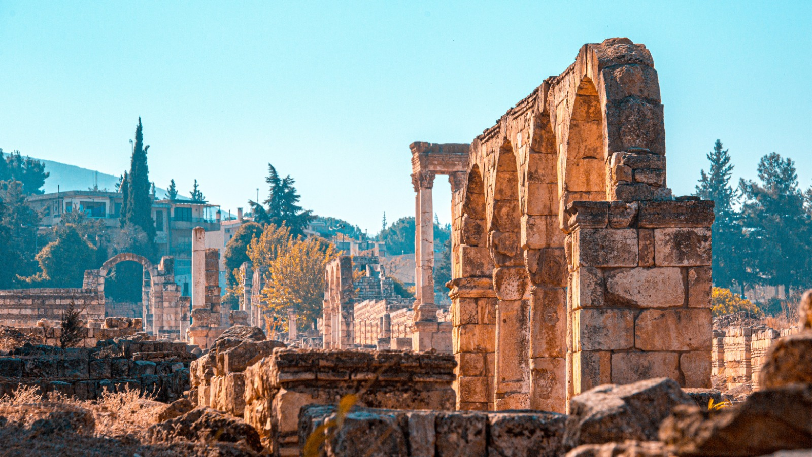
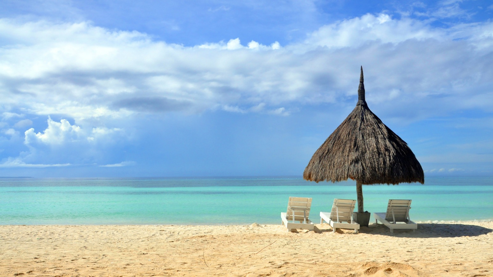

Sei alla ricerca delle
avventure più stupefacenti in giro per il mondo? Parti per la tua avventura da solo o con un piccolo gruppo.
Itinerari insoliti per chi ama scoprire gli angoli meno conosciuti del mondo! Boschi, montagne, laghi, ghiacciai,
vulcani, scroscianti cascate, impenetrabili foreste tropicali e tanto altro ancora.
Scopri di più...

Alla scoperta del passato...
Viaggi che hanno un
importante aspetto storico, artistico o culturale. Tra antichi siti archeologici e rovine, templi, monumenti,
monasteri e chiese. Dalle rovine Maya alle grandi capitali europee ricche di storia ed arte, dalle piramidi di
Giza ai templi di Angor Wat, dalla magica Petra alle antiche città carovaniere dell'Uzbekistan, dalla Grande
Muraglia al misticismo dei monasteri tibetani.
Scopri di più...
Divertimento assicurato!
Goditi una
vacanza divertente alla scoperta di ritmi di vita nuovi e coinvolgenti. Per tutti quelli che desiderano un viaggio
all’insegna del divertimento è il momento di partire alla volta di una di queste fantastiche destinazioni.Tantissime
mete per vivere il viaggio più bello e divertente della tua vita! Preparati a partire per una vacanza che non si
potrà descrivere, ma soltanto vivere!
Scopri di più...

Sole, mare e... relax
Goditi un po' di serenità in
rilassanti località balneari, tra splendide spiagge e mari cristallini Per chi vuole un viaggio stress-free e
vuole partire alla scoperta dei mari piu belli del mondo. Il vicino Egeo tra Sporadi e Costa Turchese, l'atmosfera
paradisiaca della Polinesia e dei Caraibi, gli atolli delle Maldive, la vivace Zanzibar, le rilassanti spiagge del
Kerala e tanto altro ancora.